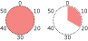

Spaghettigratäng med jordnötter

- 4 pers
- 1 liter bruten spaghetti
1 gul lök
2 msk smör
1,25 dl mjöl
5 dl filmjölk
2 tsk senap
1 krm tabasco
1 tsk salt
0,5 tsk svartpeppar
1-2 dl naturella jordnötter
ca 1 dl svarta oliver
2 dl cheddarost
ströbröd

Bryt spaghettin i små bitar och koka den, gör såsen under tiden. Finhacka lök och fräs i smör i en gryta. Rör i mjölet tills det inte är några klumpar. Tillsätt fil. Rör ner senap, tabasco­, salt och svartpeppar. Rör hela tiden tills det tjocknar så att såsen inte bränns vid.
Hacka jordnötter och oliver. Riv osten. Varva spaghetti, ost, nötter, oliver och sås i en djup form. Avsluta med ett lager spaghetti och sen ett lager sås överst. Strö till sist ett lager ströbröd över såsen. Gratinera ca 25 minuter i 175°.
Kommentarer
Anders
Gott och bra för storkok till hela veckan. Klarar sig bra i frysen om det skulle behövas. Väldigt enkelt att laga. Tack för receptet!
Skriv ny kommentar